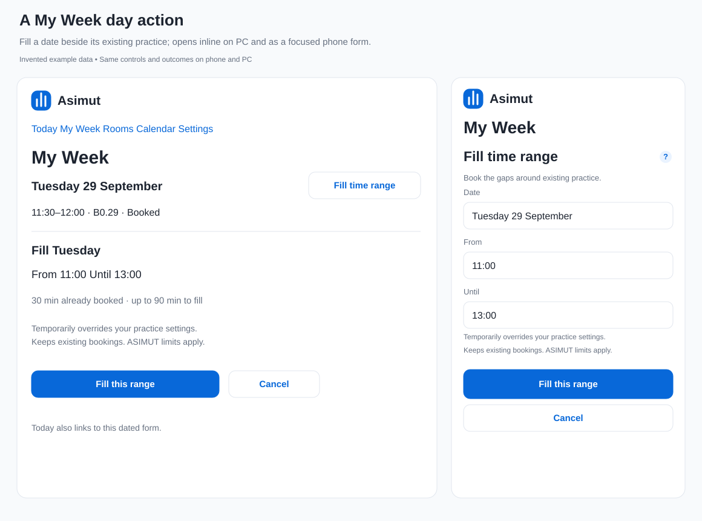
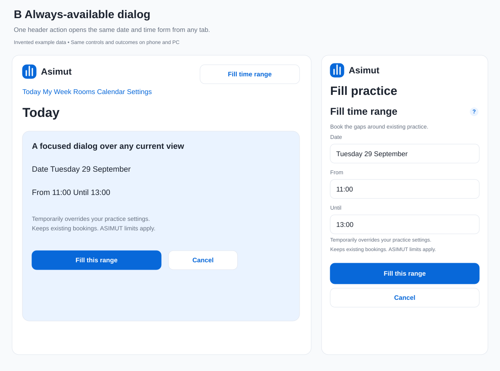
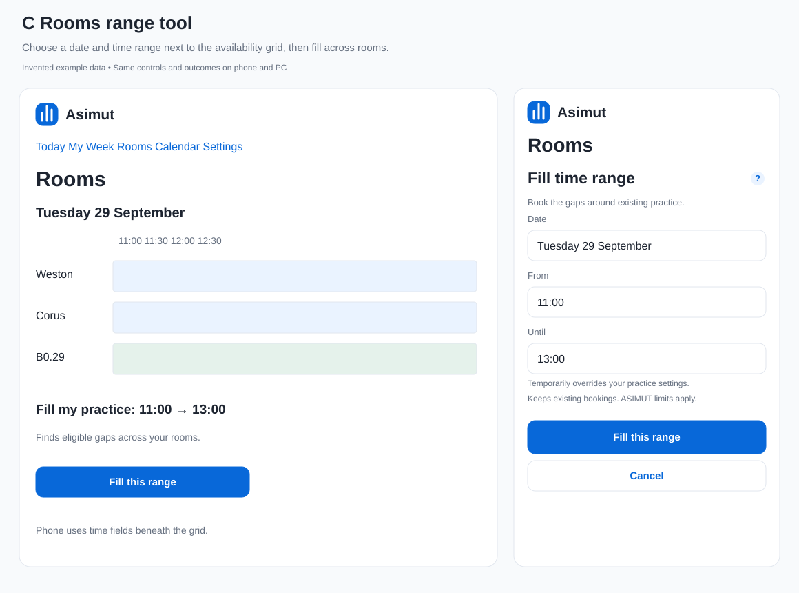
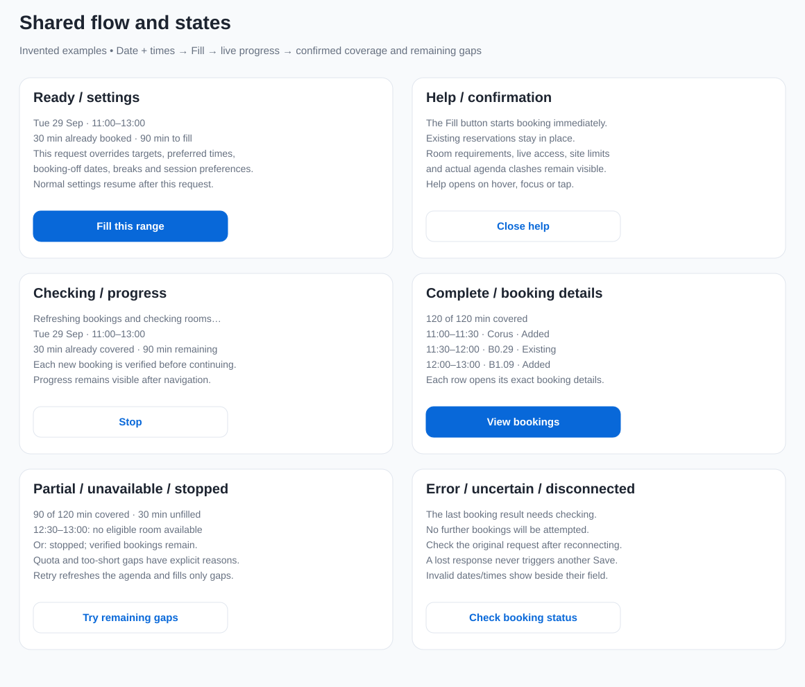
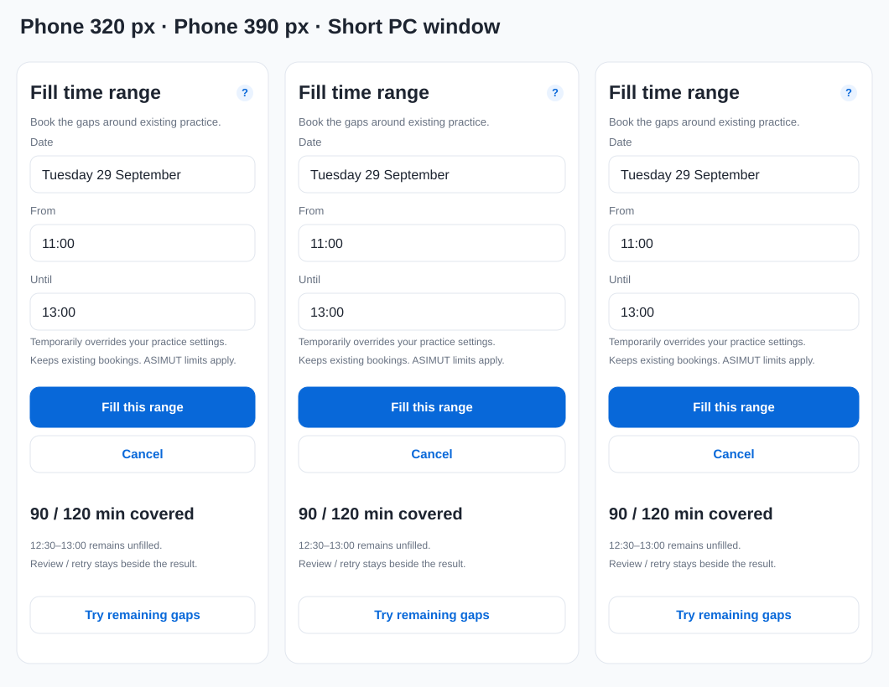

Fill time range
Three placements within the existing Quiet Focus design. All schedules and outcomes below are invented examples. A is recommended: the action sits beside the day it affects.




